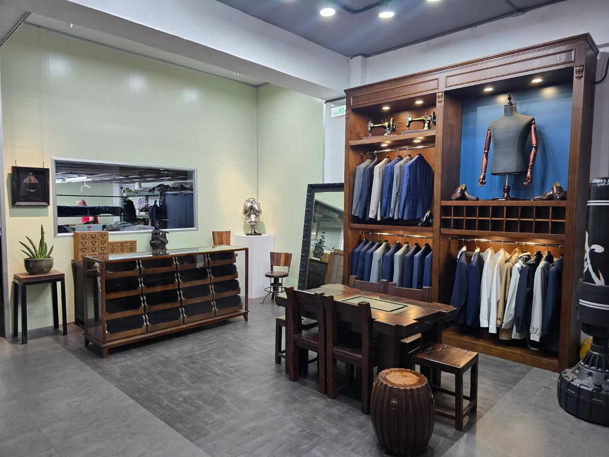
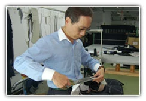
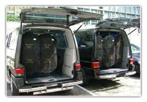
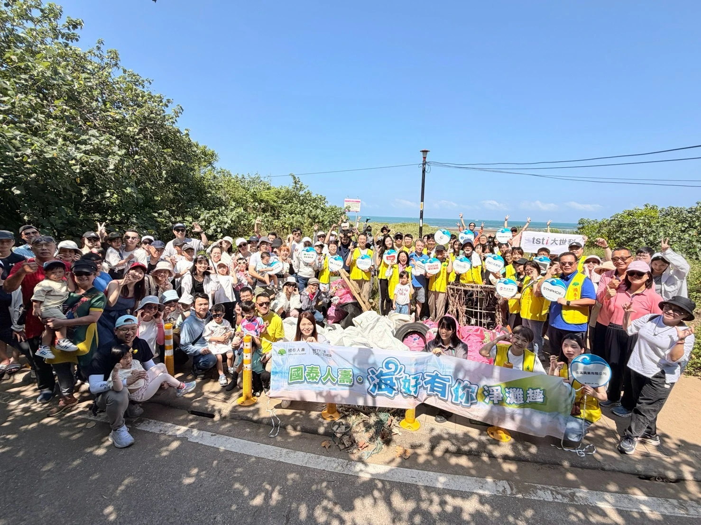
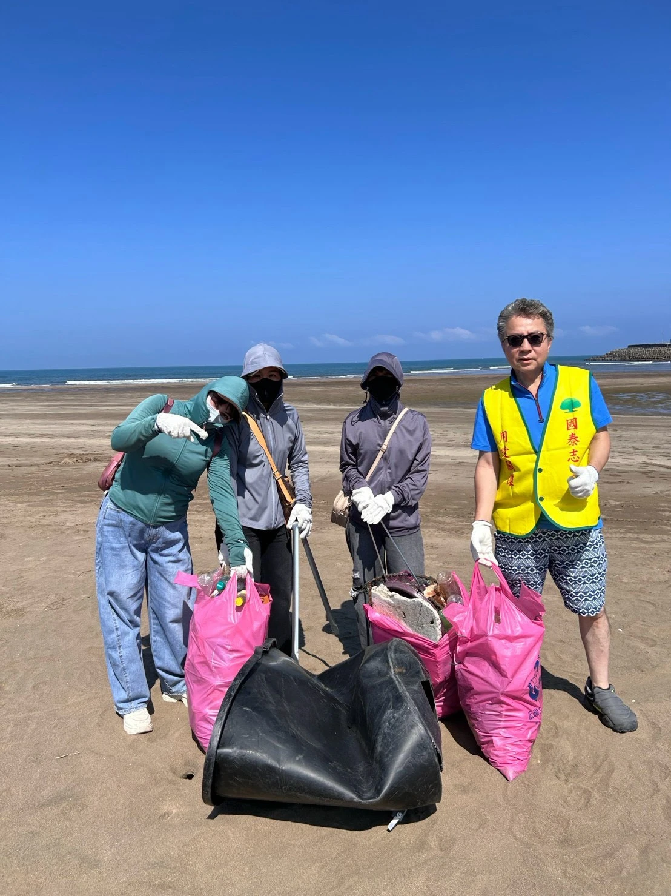

從需求理解開始
先理解用途與穿著習慣再討論款式、配色及面料設計應回應生活與工作的真實需要
ABOUT MAGGIO
一件服裝的完成，來自許多細節的累積。
我們相信，專業形象也可以穿得自然、合身而自在。

從一個人
到一個團隊
OUR STORY
野木國際位於台北南港提供個人量身訂製、企業團體制服與機能外套服務
從一位客戶的西服，到企業整體制服規劃，我們關注的始終是穿著的人：工作中需要怎麼活動、想呈現什麼印象，以及服裝如何融入日常。
既有製作流程涵蓋打版、車縫、整燙與配套，並重視面料及副料搭配。讓外觀、穿著與交付形成完整的服務，是我們持續投入的方向。
OUR APPROACH
先理解用途與穿著習慣再討論款式、配色及面料設計應回應生活與工作的真實需要
透過剪裁比例、面料與副料的搭配照顧服裝的結構、層次與整體視覺
完成整燙、配套與出貨安排讓服裝以合宜狀態交到穿著者手上
BEHIND THE GARMENT
走進製作日常看見服裝完成前的細節



以上為野木歷年製作與交付紀錄影像。
BEYOND THE WORKSHOP
從服裝現場到戶外相聚留下彼此同行的片刻


BASED IN NANGANG
LET’S MAKE IT YOURS
告訴我們你的需求一起找到合適的款式與製作方向